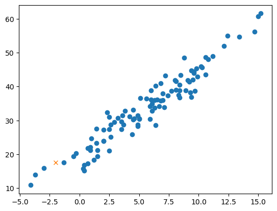
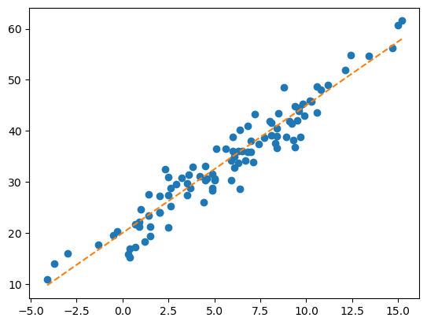
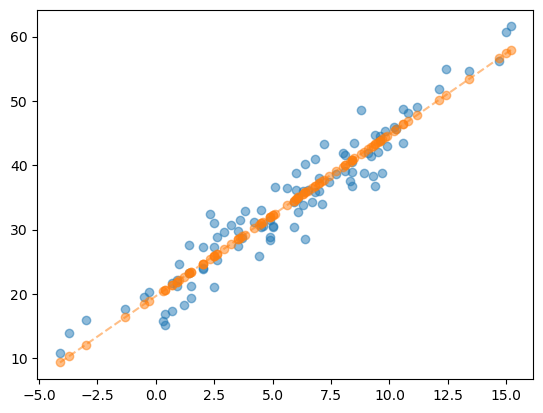
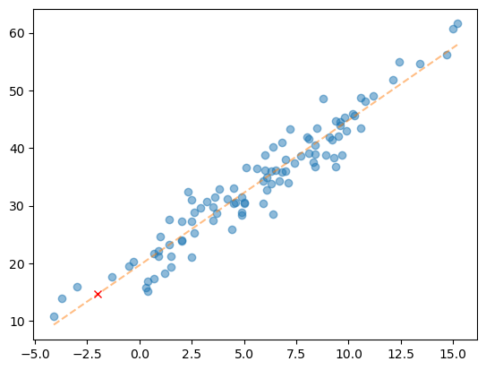
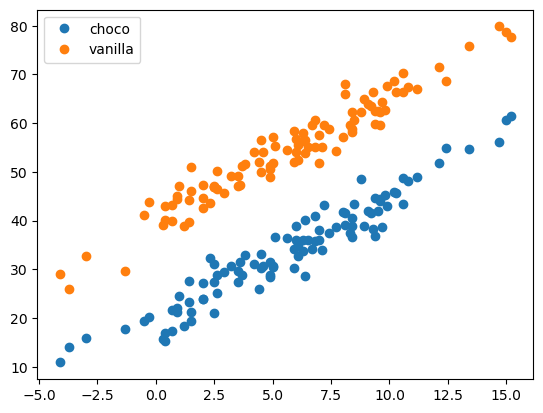
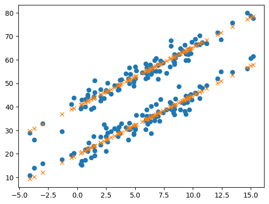
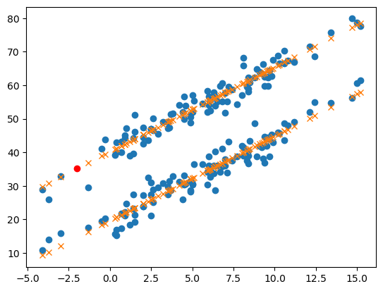

import numpy as np
import pandas as pd
import matplotlib.pyplot as plt
import sklearn.linear_model아이스크림(계절과 판매량) | 회귀분석
1. 라이브러리 설치
2. Data
temp = pd.read_csv('https://raw.githubusercontent.com/guebin/DV2022/master/posts/temp.csv').iloc[:,3].to_numpy()[:100]
temp.sort() ## 자료를 크기 순서대로 정렬temparray([-4.1, -3.7, -3. , -1.3, -0.5, -0.3, 0.3, 0.4, 0.4, 0.7, 0.7,
0.9, 0.9, 1. , 1.2, 1.4, 1.4, 1.5, 1.5, 2. , 2. , 2. ,
2.3, 2.5, 2.5, 2.5, 2.6, 2.6, 2.9, 3.2, 3.5, 3.5, 3.6,
3.7, 3.8, 4.2, 4.4, 4.5, 4.5, 4.6, 4.9, 4.9, 4.9, 5. ,
5. , 5.1, 5.6, 5.9, 5.9, 6. , 6. , 6.1, 6.1, 6.3, 6.3,
6.4, 6.4, 6.5, 6.7, 6.8, 6.8, 7. , 7. , 7.1, 7.2, 7.4,
7.7, 8. , 8.1, 8.1, 8.3, 8.4, 8.4, 8.4, 8.5, 8.8, 8.9,
9.1, 9.2, 9.3, 9.4, 9.4, 9.5, 9.6, 9.6, 9.7, 9.8, 9.9,
10.2, 10.3, 10.6, 10.6, 10.8, 11.2, 12.1, 12.4, 13.4, 14.7, 15. ,
15.2])전주시의 기온 100개 자료를 가져왔다.
#동일한 코드
#temp = np.array(pd.read_csv('https://raw.githubusercontent.com/guebin/DV2022/master/posts/temp.csv').iloc[:100,3])
#temp.sort()- 아래와 같은 모형을 가정하자.
\[\textup{아이스크림 판매량}= 20 ＋ \textup{온도} × 2.5 × \textup{오차(운)}\]
- 더미 모형 생성
np.random.seed(43052)
eps = np.random.randn(100)*3 ## 오차
icecream_sales = 20 + temp * 2.5 + epsplt.plot(temp, icecream_sales, "o")
- 우리는 아래를 관측했다고 생각하자.
df = pd.DataFrame({'temp' : temp, 'sales' : icecream_sales})
df| temp | sales | |
|---|---|---|
| 0 | -4.1 | 10.900261 |
| 1 | -3.7 | 14.002524 |
| 2 | -3.0 | 15.928335 |
| 3 | -1.3 | 17.673681 |
| 4 | -0.5 | 19.463362 |
| ... | ... | ... |
| 95 | 12.4 | 54.926065 |
| 96 | 13.4 | 54.716129 |
| 97 | 14.7 | 56.194791 |
| 98 | 15.0 | 60.666163 |
| 99 | 15.2 | 61.561043 |
100 rows × 2 columns
3. 게임셋팅
- 주어진 자료는 아래와 같다.
df| temp | sales | |
|---|---|---|
| 0 | -4.1 | 10.900261 |
| 1 | -3.7 | 14.002524 |
| 2 | -3.0 | 15.928335 |
| 3 | -1.3 | 17.673681 |
| 4 | -0.5 | 19.463362 |
| ... | ... | ... |
| 95 | 12.4 | 54.926065 |
| 96 | 13.4 | 54.716129 |
| 97 | 14.7 | 56.194791 |
| 98 | 15.0 | 60.666163 |
| 99 | 15.2 | 61.561043 |
100 rows × 2 columns
- 편의상 아래와 같은 기호를 도입하자.
- (
df.temp[0],df.temp[1], … ,df.temp[99]) = \((x_1,x_2,\dots,x_{100})=(-4.1,-3.7,\dots,15.2)\) - (
df.sales[0],df.sales[1], … ,df.sales[99]) = \((y_1,y_2,\dots,y_{100})=(10.90,14.00, \dots,61.56)\)
이 자료 \(\big\{(x_i,y_i)\big\}_{i=1}^{100}\)를 바탕으로 어떠한 패턴을 발견하여 새로운 \(x\)에 대한 예측값을 알고 싶다 : \(\hat{y}\)
A. 질문
- 기온이 \(x = -2.0\)일 때 아이스크림을 얼마정도 판다고 보는 게 타당할까?
B. 답1
- \(x = -2.0\) 근처의 데이터를 살펴보자.
df[(-4.0 < df.temp) & (0.0 > df.temp)]| temp | sales | |
|---|---|---|
| 1 | -3.7 | 14.002524 |
| 2 | -3.0 | 15.928335 |
| 3 | -1.3 | 17.673681 |
| 4 | -0.5 | 19.463362 |
| 5 | -0.3 | 20.317853 |
\(-1.3\)이 제일 가까운데, 대충 \(x = -2.0\)이라면 17.67근처이지 않을까…?
답2 | 그림을 보고 답변
- 자료를 바탕으로 그림을 그려보자
plt.plot(df.temp, df.sales, 'o')
plt.plot([-2.0],[17.67],'x') # 이미 들어가있는 플롯에 점을 하나 찍는다. 마커는 X
plt.show()
- 예상한 것보다 못팔 것 같은데…?
D. 아이디어
- 선을 기가 막히게 그어서 추세선을 만들고, 그 추세선 위의 점으로 예측하자. > (사실 추세선을 알고 있긴 함)
plt.plot(df.temp, df.sales, 'o')
plt.plot(df.temp, 20+df.temp*2.5, '--') ## 위에서 직접 설정했던 자료의 관계
plt.show()
- 사실 \(y = 20 + 2.5x\)라는 추세선을 이미 알고 있었음.
- 그래서 \(x = -2\)라면 \(y = 20 - 2.5 × 2 = 15\)라고 보는 게 합리적임(오차를 고려 안하면)
허나, 실제 상황에서 우리는 \(20, 2.5\)라는 숫자를 모른다.
- 게임셋팅 * 원래 게임 : 임의의 \(x\)에 대하여 합리적인 \(y\)를 잘 찾는 게임 * 변형된 게임 : \(20, 2.5\)라는 숫자를 잘 찾는 게임. 즉, 데이처를 보고 최대한 \(y_i \approx ax_i+b\)가 되도록 \(a, b\)를 잘 선택하는 게임
4. 분석
A. 데이터
- 변수 설정
X = df[['temp']] ## 독립변수, 설명변수, 피쳐
y = df[['sales']] ## 종속변수, 반응변수, 타겟. 실측치니 소문자로 표시
plt.plot(X, y, 'o')
plt.show()
- 다시 질문 : 기온이 \(x = -2.0\)일 때 아이스크림을 얼마정도 판다고 보는 게 타당할까?
df[(-3.0 < df.temp) & (-1.0 > df.temp)]| temp | sales | |
|---|---|---|
| 3 | -1.3 | 17.673681 |
답1 : 대충 17.67 근처이지 않을까?
답2 : 17.67보다 작지 않을까?
아이디어 : 추세선을 그리고 거기서 예측해보면 어떨까?
- 데이터를 학습하여 추세선을 적절히 그릴 수 있고, 그려진 추세선으로 예측까지 해줄 수 있는 아이(predictor)를 만들자.
B. Predictor 생성
predictr = sklearn.linear_model.LinearRegression() ## 명령어가 겹칠 수 있으니 o를 제거
predictrLinearRegression()In a Jupyter environment, please rerun this cell to show the HTML representation or trust the notebook.
On GitHub, the HTML representation is unable to render, please try loading this page with nbviewer.org.
LinearRegression()
학습을 할 아이를 만들었다.
C. 학습(fit, learn)
predictr.fit(X,y)LinearRegression()In a Jupyter environment, please rerun this cell to show the HTML representation or trust the notebook.
On GitHub, the HTML representation is unable to render, please try loading this page with nbviewer.org.
LinearRegression()
학생을 수련시켰다.
D. 예측(predict)
- predictr : 데이터를 살펴보니 True는 이럴 것 같아요.
y_hat = predictr.predict(X) ## X값에 해당하는 y_hat값을 예측하여 산출.plt.plot(X, y, 'o', alpha = 0.5)
plt.plot(X, y_hat, 'o--', alpha = 0.5)
plt.show()
- 교수님 : 저런 추세선을 그렸다면, \(y = ax + b\)꼴의 식에서 \(a, b\)를 적당한 값으로 찾았다는 의미인데, 그 값은 어디있지?
- predictr : 아래에 있어요
a = predictr.coef_ ## 상관계수의 약자인듯?
b = predictr.intercept_ ## 절편
(a, b)(array([[2.51561216]]), array([19.66713127]))- 나 : 결과값에 믿음이 안가니 확인해볼게.
- predictr : …
(df.temp * float(a) + float(b))[:5]0 9.353121
1 10.359366
2 12.120295
3 16.396835
4 18.409325
Name: temp, dtype: float64y_hat[:5]array([[ 9.35312141],
[10.35936628],
[12.12029479],
[16.39683546],
[18.40932519]])- 이와 같이 실제 데이터와 일치하는 것을 볼 수 있다(predictr : 맞다니까…)
- 새로운 데이터 \(x = -2\)에 대한 예측(1) - 수식 위주로
float(a*(-2) + b)14.635906949512638plt.plot(X, y, 'o', alpha = 0.5)
plt.plot(X, y_hat,'--', alpha = 0.5)
plt.plot([-2],[14.635906949512638], 'xr')
plt.show()
예측값이 직선상에 존재하는 것을 알 수 있다.
- 새로운 데이터 \(x = -2\)에 대한 예측(2) - 코드 위주로(★)
Xnew = pd.DataFrame({'temp' : [-2.0]}); Xnew| temp | |
|---|---|
| 0 | -2.0 |
plt.plot(X, y, 'o', alpha = 0.5)
plt.plot(X, y_hat, '--', alpha = 0.5)
plt.plot(Xnew, predictr.predict(Xnew), 'xr') ## 이미 predictr는 해당 모형에 대해 학습한 이후이므로
plt.show()
아이스크림(초코 / 바닐라) 회귀분석
이전의 기온 자료를 다시 이용하여 아래와 같은 모형을 가정해보자
라이브러리 설치
import pandas as pd
import numpy as np
import matplotlib.pyplot as plt
import sklearn.linear_model1. 데이터셋 만들기
temp = pd.read_csv('https://raw.githubusercontent.com/guebin/DV2022/master/posts/temp.csv').iloc[:,3].to_numpy()[:100]
temp.sort() ## 자료를 크기 순서대로 정렬
temp ## 전주시의 기온 100개 자료array([-4.1, -3.7, -3. , -1.3, -0.5, -0.3, 0.3, 0.4, 0.4, 0.7, 0.7,
0.9, 0.9, 1. , 1.2, 1.4, 1.4, 1.5, 1.5, 2. , 2. , 2. ,
2.3, 2.5, 2.5, 2.5, 2.6, 2.6, 2.9, 3.2, 3.5, 3.5, 3.6,
3.7, 3.8, 4.2, 4.4, 4.5, 4.5, 4.6, 4.9, 4.9, 4.9, 5. ,
5. , 5.1, 5.6, 5.9, 5.9, 6. , 6. , 6.1, 6.1, 6.3, 6.3,
6.4, 6.4, 6.5, 6.7, 6.8, 6.8, 7. , 7. , 7.1, 7.2, 7.4,
7.7, 8. , 8.1, 8.1, 8.3, 8.4, 8.4, 8.4, 8.5, 8.8, 8.9,
9.1, 9.2, 9.3, 9.4, 9.4, 9.5, 9.6, 9.6, 9.7, 9.8, 9.9,
10.2, 10.3, 10.6, 10.6, 10.8, 11.2, 12.1, 12.4, 13.4, 14.7, 15. ,
15.2])- 아래와 같은 모형을 가정하자.
\[\textup{초코 아이스크림 판매량} = 20 + \textup{온도} \times 2.5 + \textup{오차(운)}\]
\[\textup{바닐라 아이스크림 판매량} = 40 + \textup{온도} \times 2.5 + \textup{오차(운)}\]
np.random.seed(43052)
choco = 20 + temp * 2.5 + np.random.randn(100)*3
vanilla = 40 + temp * 2.5 + np.random.randn(100)*3plt.plot(temp, choco, 'o', label = 'choco')
plt.plot(temp, vanilla, 'o', label = 'vanilla')
plt.legend()
plt.show()
- 주어진 자료 : 우리는 아래를 관측했다고 가정하자.
df1 = pd.DataFrame({'temp' : temp, 'sales' : choco}).assign(type = 'choco')
df2 = pd.DataFrame({'temp' : temp, 'sales' : vanilla}).assign(type = 'vanilla')
df = pd.concat([df1, df2]).reset_index()
df| index | temp | sales | type | |
|---|---|---|---|---|
| 0 | 0 | -4.1 | 10.900261 | choco |
| 1 | 1 | -3.7 | 14.002524 | choco |
| 2 | 2 | -3.0 | 15.928335 | choco |
| 3 | 3 | -1.3 | 17.673681 | choco |
| 4 | 4 | -0.5 | 19.463362 | choco |
| ... | ... | ... | ... | ... |
| 195 | 95 | 12.4 | 68.708075 | vanilla |
| 196 | 96 | 13.4 | 75.800464 | vanilla |
| 197 | 97 | 14.7 | 79.846568 | vanilla |
| 198 | 98 | 15.0 | 78.713140 | vanilla |
| 199 | 99 | 15.2 | 77.595252 | vanilla |
200 rows × 4 columns
2. 분석
A. 데이터
X = df[['temp', 'type']] ## 독립변수, 설명변수, 피쳐
y = df[['sales']] ## 종속변수, 반응변수, 타겟이대로 넣으면 type에 들어간 데이터가 범주형이기 때문에 인식을 못한다.
X = X.assign(type = (df.type == "choco"))
#X.assign(type = [type == 'choco' for type in X.type]) ## True / False로 이루어진 리스트X = X.assign(type = (df['type'] == 'choco')*1.0)B. predictor 생성
predictr = sklearn.linear_model.LinearRegression()
predictrLinearRegression()In a Jupyter environment, please rerun this cell to show the HTML representation or trust the notebook.
On GitHub, the HTML representation is unable to render, please try loading this page with nbviewer.org.
LinearRegression()
C. 학습(fit, learn)
predictr.fit(X,y)LinearRegression()In a Jupyter environment, please rerun this cell to show the HTML representation or trust the notebook.
On GitHub, the HTML representation is unable to render, please try loading this page with nbviewer.org.
LinearRegression()
D. 예측(predict)
y_hat = predictr.predict(X)plt.plot(df.temp, df.sales, 'o')
plt.plot(df.temp, predictr.predict(X), 'x')
plt.show()
뜻도없이 초코 바닐라에 (1,0)을 넣었는데, 어떻게 뭐가 나오긴 했다.
어케함???
\[\textup{아이스크림 판매량} = 40 + \textup{아이스크림종류} \times (-20) + \textup{온도} \times 2.5 + \textup{오차(운)}\]
predictr.coef_, predictr.intercept_(array([[ 2.52239574, -20.54021854]]), array([40.16877158]))범주형 자료인 아이스크림 종류에 따라 -20.54를 곱한 수를 더하여 수식을 설명하였다.
- 온도가 -2이고, type이 ``vanilla```라면? 예측값은?
Xnew = pd.DataFrame({'temp' : [-2.0], 'type' : [0]})
Xnew| temp | type | |
|---|---|---|
| 0 | -2.0 | 0 |
학습한 모델에 적용하여 예측
predictr.predict(Xnew)array([[35.1239801]])plt.plot(df.temp, df.sales, 'o')
plt.plot(df.temp, y_hat, 'x')
plt.plot(Xnew.temp, predictr.predict(Xnew), 'ro')
plt.show()
온도가 -2일 때 바닐라맛 아이스크림의 판매 정도를 예측하였다.
3. 데이터를 전처리하는 다른 방법
- 데이터
X = df[['temp','type']] # 독립변수, 설명변수, 피쳐
y = df[['sales']] # 종속변수, 반응변수, 타겟 - 원-핫 인코딩
X = pd.get_dummies(X) ## 일단 다 숫자다...(0,1) 더미를 만드는 방식이다.
X| temp | type_choco | type_vanilla | |
|---|---|---|---|
| 0 | -4.1 | True | False |
| 1 | -3.7 | True | False |
| 2 | -3.0 | True | False |
| 3 | -1.3 | True | False |
| 4 | -0.5 | True | False |
| ... | ... | ... | ... |
| 195 | 12.4 | False | True |
| 196 | 13.4 | False | True |
| 197 | 14.7 | False | True |
| 198 | 15.0 | False | True |
| 199 | 15.2 | False | True |
200 rows × 3 columns
장점 : 구분할 범주형 변수가 많아질 때 용이하다. 바닐라 / 초코 / 딸기일 때 0/1/2로 분류하기는 어려우니까…
이후 과정은 동일
predictr = sklearn.linear_model.LinearRegression()
predictr.fit(X,y)
y_hat = predictr.predict(X)plt.plot(df.temp, df.sales, 'o')
plt.plot(X.temp, y_hat, 'x')
plt.show()진짜 어떻게 한 걸까?
- 컴퓨터가 모형을 어떻게 바라본 걸까?
predictr.coef_, predictr.intercept_(array([[ 2.52239574, -10.27010927, 10.27010927]]), array([29.89866231]))초코와 바닐라에 적용되는 들어가있는 coef_가 각기 설정되어 있다. 초코일 때 -10.27을 빼주고, 바닐라일 때 10.27을 더해주는 식으로…
\[\textup{아이스크림 판매량} = 30 + \textup{초코} \times (-10) + \textup{바닐라} \times 10 + \textup{온도} \times 2.5 + \textup{오차(운)}\]
4. 모형을 평가하는 방법
- \(r^2\) : 결정계수의 크기를 내준다.
predictr.score(X, y)0.9628857449454437상당히 높은 숫자, 모형이 아주 좋다고 평가된다.